Lugus Transfer sends footage straight from one computer to another. The sender creates a link and a code, the recipient types them in, and the files travel directly between the two machines, encrypted end to end. There is no server in the middle, no cloud storage and no account.
The rule is the same as on set: a transfer is only finished once the files have been checked on arrival. Lugus Transfer reads every received file back from the recipient's disk, compares it with the source, and only then calls it "verified". An MHL file is written in the received folder, and the sender gets a delivery receipt.
Lugus Transfer is free, open source (MIT License), and needs no account or license key.
The sender and the recipient both need Lugus Transfer, but not the same system: a Mac can send to a PC and the other way round.
First launch
The app is not signed yet, so your system shows a warning, only once:
Windows: click "More info", then "Run anyway".
macOS: right-click the app, choose "Open", then confirm.
Your browser may also flag the download as unusual. This is common for a new, unsigned app. Keep the file from the downloads panel. If in doubt, have it scanned on VirusTotal.
If your system or your firewall asks whether Lugus Transfer may use the network, allow it. That is how the two computers reach each other.
Welcome window
On first launch, Lugus Transfer shows a disclaimer (1). Read it, then click I understand and accept (2). You can find it again under About (the i button).
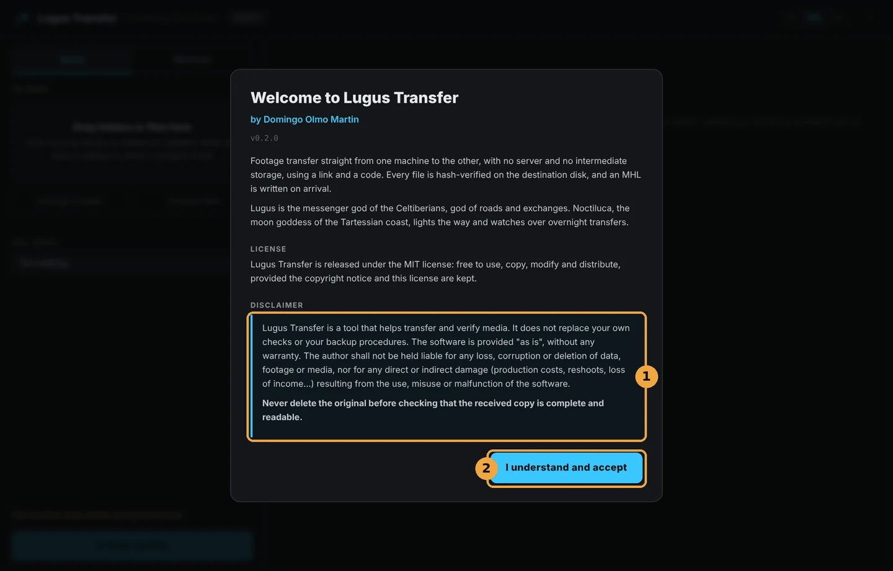
3. The interface at a glance
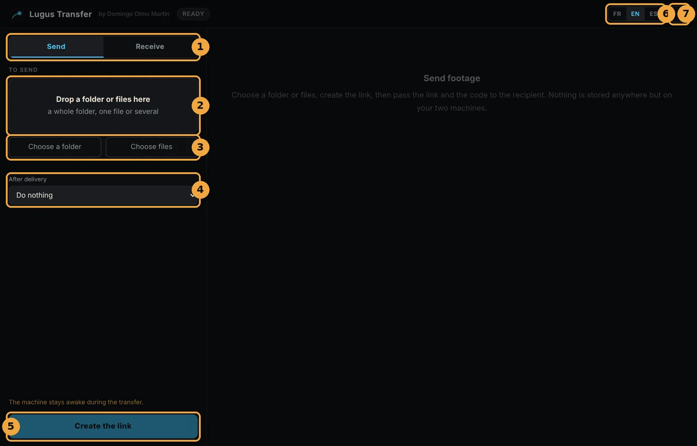
Send / Receive: the two modes of the app. The same app is used on both sides.
Drop zone: drop a folder, one file or several files here.
Choose a folder / Choose files: the same thing with the system window. "Choose files" lets you pick several files at once.
After delivery: do nothing, put the computer to sleep, or shut it down once the recipient has confirmed delivery.
Main button: Create the link when sending, Receive when receiving, then Stop while a transfer is running.
FR / EN / ES: switches the interface language instantly.
About (the i button): version, license and disclaimer.
During a transfer, the right side shows:
- a row of numbered steps, the current one highlighted;
- a status line in plain words, saying what is happening and what to do;
- the progress: percentage, a blue bar for the data transferred, a green bar for the data already verified on the recipient's disk, speed, time remaining, time elapsed and network path (local network, direct or relay);
- the log and, when receiving, the list of verified files.
At the top, the badge next to the app name sums up the state: Ready, Preparing, Publishing, Waiting, Sending, Searching, Choosing, Receiving, Noctiluca, Verified, Error, Stopped.
The line The machine stays awake during the transfer reminds you that Lugus Transfer stops the computer from going to sleep on its own while it works.
4. Sending footage, step by step
Step 1: choose what to send
Drop a folder on the window, or click Choose a folder. You can also send:
- one file: it will arrive on its own in the recipient's folder;
- several files: drop them together, or select them with Choose files. They must come from the same folder.
When you choose a folder or several files, their content is listed on the right, everything ticked:
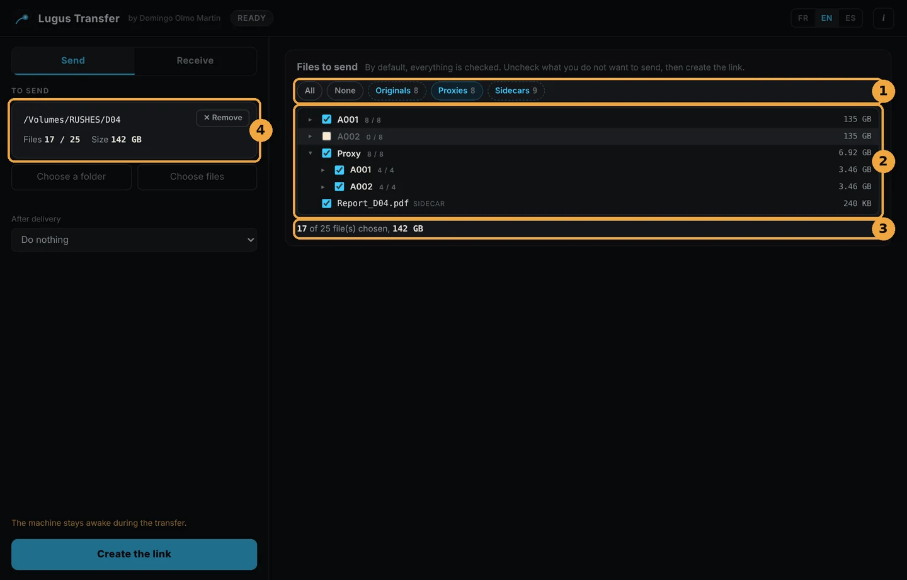
Quick filters: All, None, then Originals, Proxies and Sidecars (XML, LUT, sound, reports…) with their count. A click ticks or unticks the whole category.
The tree of the folder: click a folder name to open it, tick or untick a file or a whole folder. A half-filled box means part of the folder is selected.
The total of what will be sent: number of files and size.
The summary on the left shows the same total, for example Files 17 / 25. The ✕ Remove button clears everything and starts again from scratch.
You do not need to click Remove to change your mind: choosing another folder or other files simply replaces the previous choice.
Step 2: after delivery (optional)
Under After delivery, choose what the computer does once the recipient has confirmed delivery: Do nothing, Sleep or Shut down the computer. Useful when you send a big batch and leave.
Step 3: create the link
Click Create the link. Lugus Transfer analyses the files, then publishes the link on the network:
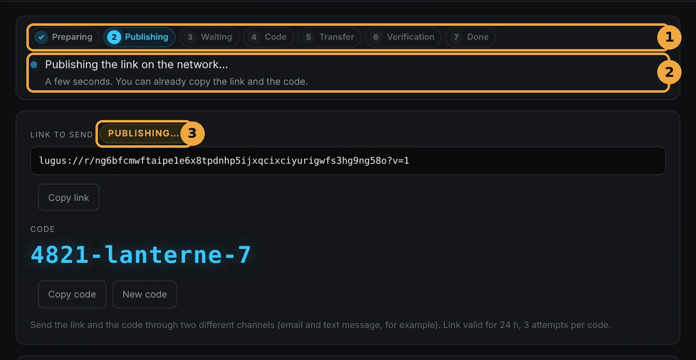
The steps move from Preparing to Publishing.
The status line says the link is being published. It takes a few seconds, and you can already copy the link and the code.
The badge next to the link reads Publishing….
As soon as the link can be found on the network, the badge turns to Online:
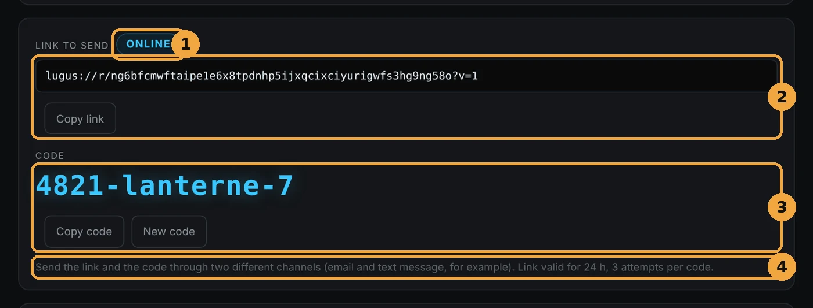
Online: the recipient can now reach your computer. If the badge reads Not visible yet after 90 seconds, the link may work anyway: send it, and keep Lugus Transfer open.
The link (lugus://r/…) and its Copy link button.
The code (for example 4821-lanterne-7), with Copy code and New code.
The reminder: send the link and the code through two different channels, for example the link by email and the code by text message. The link is valid for 24 hours, with 3 attempts per code.
Someone who only has the link cannot do anything with it: they also need the code.
Step 4: wait for the recipient
Keep Lugus Transfer open. When the recipient types the code, the status line says a recipient is connecting and the code is being checked.
Wrong code: the log says so and shows how many attempts are left. The recipient can try again after a short delay.
3 failed attempts: the code is locked. Click New code and send the new code. The link does not change.
Code accepted: the recipient chooses the files they want. The status line says so.
Step 5: the transfer
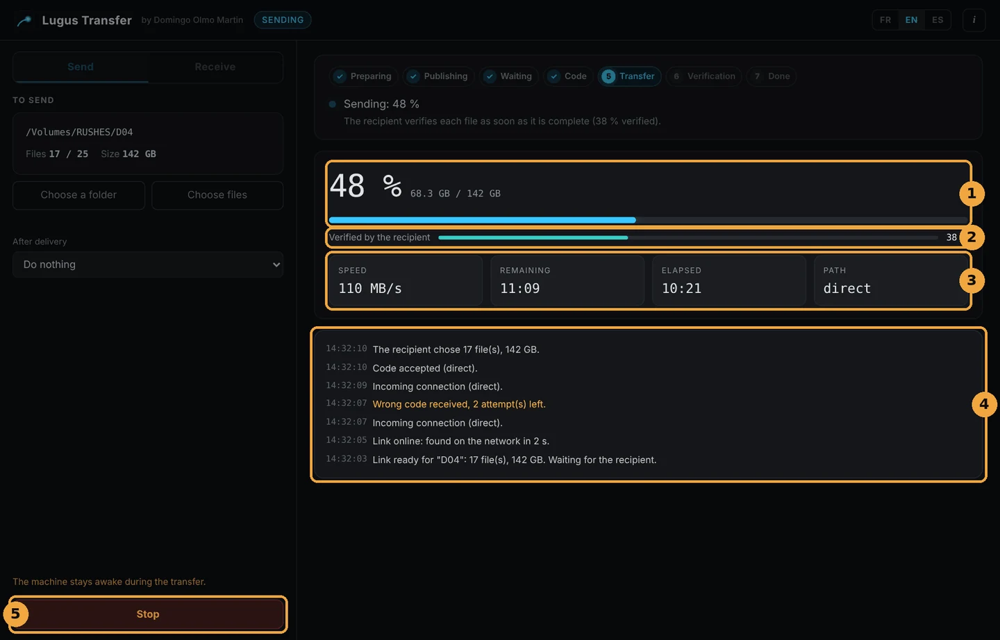
The percentage and the blue bar: how much the recipient has received.
The green bar: how much has already been read back and verified on the recipient's disk. Each file is verified as soon as it is complete, so the green bar follows the blue one.
Speed, time remaining, time elapsed and network path.
The log: connection, code, files chosen by the recipient.
Stop: ends the transfer and closes the link. Nothing already received is lost on the other side (see section 8).
The figures shown are those of the recipient: after an interruption and a resume, both screens show the same percentage.
Step 6: verification on the recipient's side
When everything has been sent, the transfer is not over yet. The recipient reads the last files back from their disk:
The status line reads Everything is sent. Verification by the recipient, with the percentage.
The green bar goes on up to 100 %.
Keep Lugus Transfer open until the confirmation.
Step 7: delivered
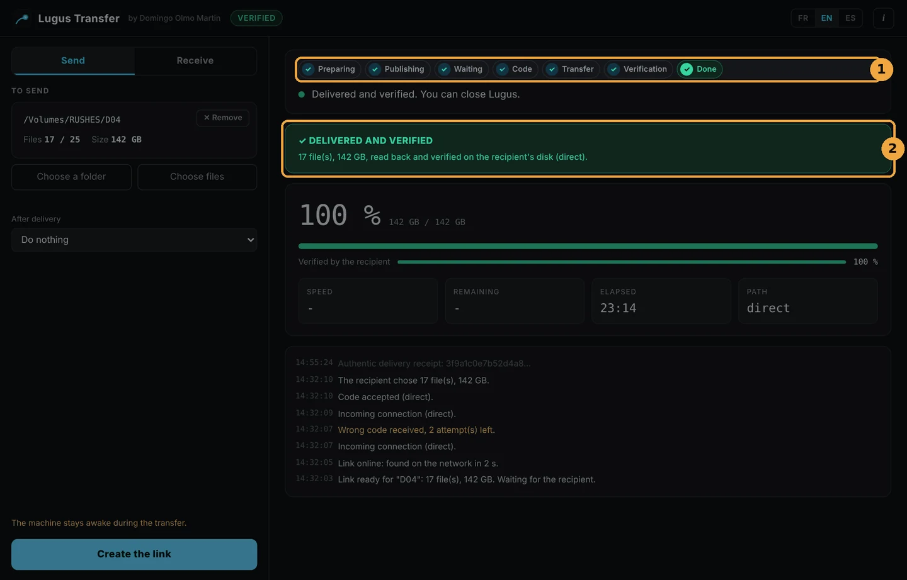
Every step is ticked and Done turns green.
The ✓ DELIVERED AND VERIFIED banner gives the number of files and the size, read back and verified on the recipient's disk.
The recipient has sent an authenticated delivery receipt: it can only come from the person who typed the right code. You can close Lugus Transfer. The link is then used: to send to someone else, create a new link.
5. Receiving footage, step by step
Step 1: link, code and destination
Click Receive at the top left.
Link: paste the link you were sent. Valid link confirms its form.
Code: type the code. It is checked on your computer before anything is sent: a typo is caught right away and never uses up an attempt.
Destination: click Choose and pick the folder where the footage will arrive. A folder arrives in a sub-folder with its name, and so do several files sent together (with the name of the folder they come from). A single file arrives directly in the destination.
Noctiluca mode: to receive overnight (see section 6).
Receive: starts the reception.
Lugus Transfer then looks for the sender on the network. It usually takes a few seconds. If the sender cannot be found yet (common right after the link was created), Lugus Transfer tries again on its own for 90 seconds and shows the attempt number.
Step 2: choose the files
Once the code is accepted, the content offered by the sender is listed, everything ticked:
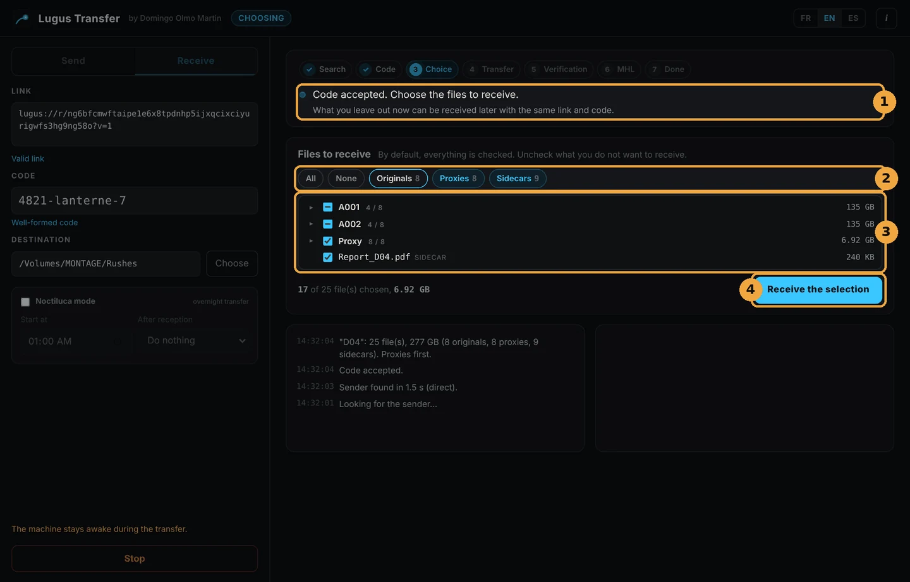
The status line asks you to choose the files.
Quick filters: All, None, Originals, Proxies, Sidecars. Here, the originals have been unticked to get the proxies first.
The tree, with a box for each file and each folder.
Receive the selection starts the transfer.
What you leave out now can be received later with the same link and the same code: files already received and verified are skipped.
Step 3: the transfer
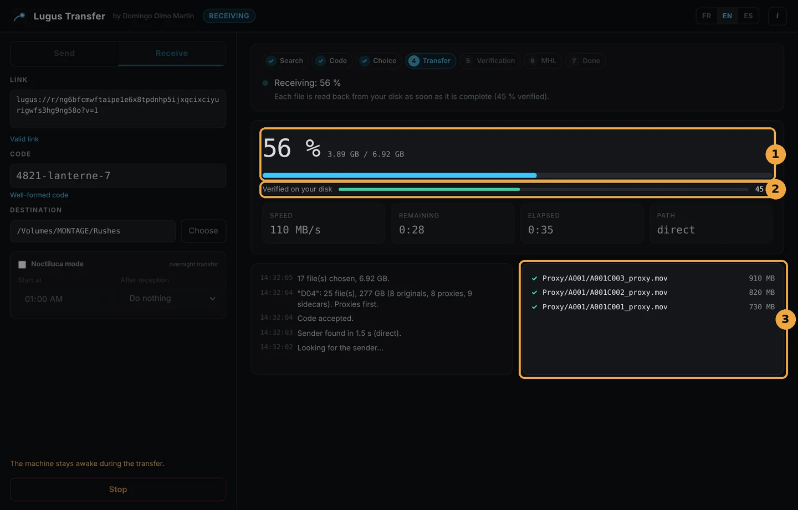
The percentage and the blue bar: what has been received.
The green bar: what has already been read back from your disk and verified.
The verified files, one by one, newest at the top.
Proxies and sidecar files come first, then the originals. Up to 4 files are received at the same time.
Step 4: verification on your disk
When everything is received, Lugus Transfer finishes reading the last files back:
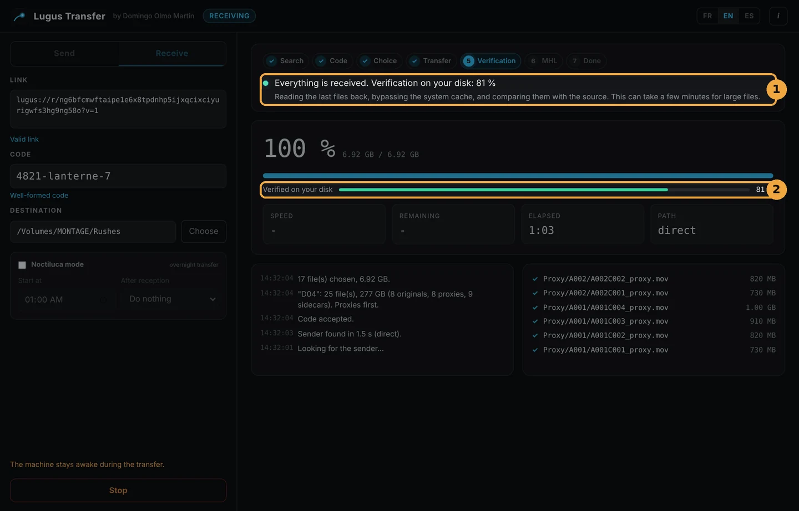
The status line reads Everything is received. Verification on your disk, with the percentage. With large files, this can take a few minutes: the whole file is read back from the disk, bypassing the system cache, and compared with the source.
The green bar goes on up to 100 %.
Step 5: MHL and receipt
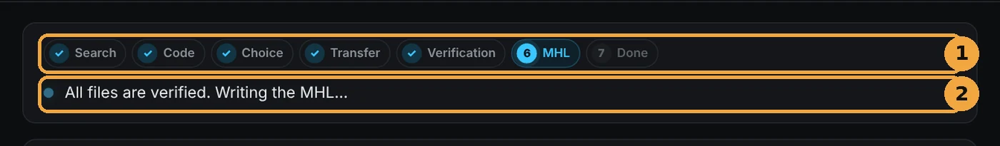
The MHL step is active.
The status line says every file is verified and the MHL is being written, then the delivery receipt is sent to the sender.
Step 6: received
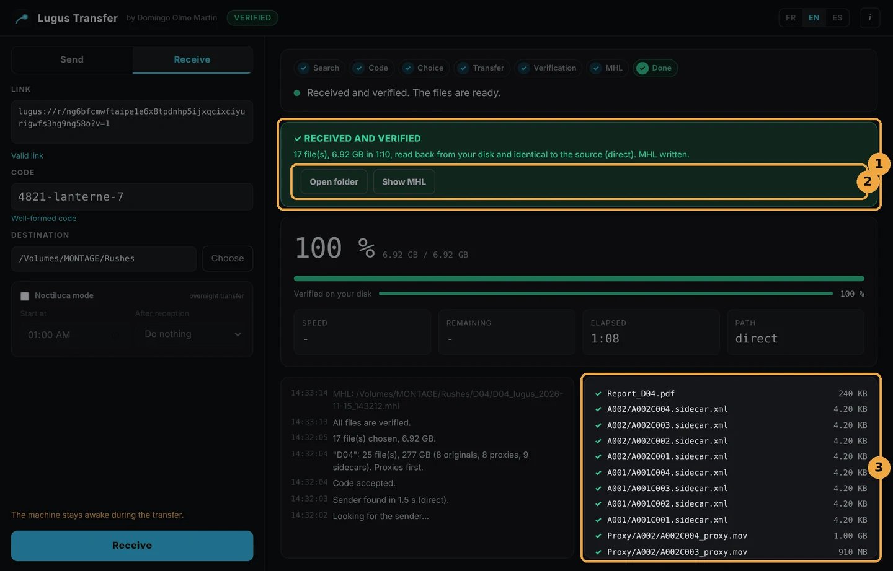
The ✓ RECEIVED AND VERIFIED banner: number of files, size, duration and network path.
Open folder opens the received folder, Show MHL shows the MHL file.
The list of verified files.
The MHL is called <name>_lugus_<date>.mhl, for example D04_lugus_2026-11-15_143212.mhl. It never overwrites an MHL already in the folder, such as the one written by Bandua on set.
6. Noctiluca mode: receiving overnight
Big transfers are best done at night, when the connection is free and nobody needs the computer. Noctiluca mode schedules the reception and handles the end on its own.
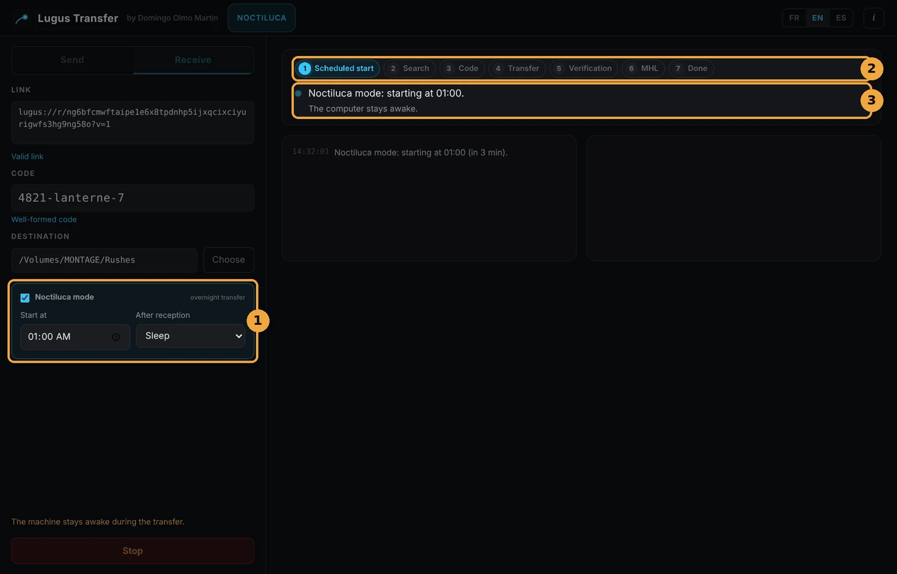
Tick Noctiluca mode, set the Start at time (01:00 for example), and choose what happens After reception: do nothing, sleep, or shut down the computer. Then click Schedule the reception.
The steps start with Scheduled start.
The status line gives the start time. The computer stays awake until then.
The link and the code are checked before the wait, so a typo shows up straight away and not at 1 in the morning. If the time has already passed today, the reception starts tomorrow at that time.
In Noctiluca mode, nobody is there to choose the files: everything the sender offers is received. The sender's computer must be on and Lugus Transfer open at the start time.
When everything is verified, the computer goes to sleep or shuts down. On Windows, the shutdown leaves 60 seconds to cancel it.
7. What Lugus Transfer does to protect your footage
All of this happens in the background, with nothing for you to set.
Nothing in the middle. The files go from one computer to the other. They are never stored on a server. Even when the connection goes through a public relay, it stays encrypted end to end: the relay only passes along data it cannot read.
The code never travels. The two computers prove to each other that they know the code (SPAKE2) without ever sending it. Someone who intercepts the link learns nothing, and only has 3 attempts.
Every block is checked. Files travel in 4 MB blocks. The sender computes the hash of each block when it reads it from its disk; the recipient checks it before writing the block.
Safe writing. Each file is first written under a temporary name (.lugus-part), with a journal (.lugus-journal) noting every block written. A file only gets its real name once verified. A file with its final name is therefore a checked file.
Verification on the disk, not in memory. At the end of each file, the recipient reads it back from the disk with the system cache bypassed, and compares each block, then the whole file, with the hash of the source (BLAKE3). If anything differs, the file is rejected and its progress erased, so it is received again from the start.
Original dates kept. Received files get the modification date of the source.
Authenticated receipt. At the end, the recipient sends the sender a receipt that only they can produce. That is what turns the sender's screen to Delivered and verified.
8. Interruptions and errors
Resuming after an interruption
Network cut, window closed, computer gone to sleep, Stop clicked by mistake: the transfer can resume exactly where it stopped.
On the sender's side, nothing to do: Lugus Transfer stays waiting, the link remains valid (24 hours). If the sender closed Lugus Transfer or clicked Stop, they create a new link for the same files and send it.
On the recipient's side, start the reception again with the link and the code (the same ones, or the new ones), and the same destination. Each file resumes after its last block written and checked; files already complete are read back and checked again, then skipped.
Both screens show the same progress from the moment the computers reconnect. Right after a resume, the green bar may start lower than the blue one: files already present are read back once more before being counted as verified.
When something goes wrong
What you see
What it means
What to do
"Sender not found yet, trying again…"
The link is not visible on the network yet, or the network answers badly.
Wait: Lugus Transfer tries again on its own for 90 seconds.
"Sender not found" (after 90 seconds)
The sender's computer is off, asleep, or Lugus Transfer is closed, or the link is wrong.
Check with the sender that Lugus Transfer is open, then start again.
"Wrong code, N attempt(s) left"
The code typed does not match.
Check the code. Wait a few seconds between attempts.
"This code is locked"
3 attempts failed.
Ask the sender for a new code (New code). The link does not change.
"Connection lost"
The network dropped, or the other computer went to sleep or was closed.
Start the reception again with the same link and code: it resumes where it stopped.
"This link has expired"
More than 24 hours have passed.
The sender creates a new link.
"Another file with the same name already exists at the destination"
A file with the same name, but different, is already in the destination folder.
Choose another destination, or move the old file. Lugus Transfer never overwrites anything.
"The file read back from the disk does not match the source"
What was written on the disk is not what was sent: a disk, cable or connection problem on the recipient's side.
Start the reception again: the file is received again from the start. If it happens again, check the destination disk.
"A file changed at the sender's since the link was created"
The source file was modified, or was still being written when the link was created.
The sender waits until the copy or export is finished, then creates a new link.
9. Good practice
Send the link and the code through two different channels. The link alone is useless, which is the point.
Keep both computers plugged in. A transfer of several hundred gigabytes takes hours.
Leave a laptop open. Lugus Transfer keeps the computer awake, but closing the lid usually puts a laptop to sleep anyway.
Ask for the proxies first if the editor needs to start quickly, then the originals, overnight in Noctiluca mode.
Wait for Delivered and verified before deleting anything at the sender's side, and keep the original copies anyway until the footage has been backed up at the recipient's.
Check the MHL with Bandua MHL Companion when the footage moves again, from one drive to another.
10. FAQ
How fast is it?
As fast as the slower of the two connections allows, often the sender's upload speed. On the same local network, the transfer runs at local network speed. The Path box says whether the connection is local network, direct or relay; a relay is slower.
Is there a size limit?
No. Lugus Transfer is made for very large files and whole shoot days.
Do both computers need to be on at the same time?
Yes. Nothing is stored in between: the files go directly from one to the other. Noctiluca mode lets you schedule the reception for when both are free.
Can I send to several people?
One link is for one delivery. To send the same footage to someone else, create a new link.
What goes on the Internet?
To be found, the sender publishes its network addresses, signed by a one-time key, in the public BitTorrent DHT. The files, the folder names and the code are never published: they only travel encrypted between the two computers.
Can the editor's software read the MHL?
Yes, it is MHL 1.1 with xxHash64, the standard read by Silverstack, ShotPut Pro, Hedge and Bandua MHL Companion.
Does Lugus Transfer run on Linux?
Not for now. The code stays compatible, but there is no Linux build until it can be tested. The command line tool can be built on Linux from the source code.
11. Disclaimer and license
Lugus Transfer is a tool to help transfer and verify media. It does not replace your own checks or backup procedures. The software is provided "as is", without any warranty. The author cannot be held responsible for any loss, corruption or deletion of data, footage or media, nor for any direct or indirect damage (production costs, reshoots, loss of income…) resulting from the use, misuse or malfunction of the software.
Never delete the original before checking that the received copy is complete and readable.
Lugus Transfer envoie vos rushes directement d'un ordinateur à l'autre. L'expéditeur crée un lien et un code, le destinataire les saisit, et les fichiers passent directement d'une machine à l'autre, chiffrés de bout en bout. Pas de serveur au milieu, pas de stockage dans le cloud, pas de compte.
La règle est la même que sur le plateau : un transfert n'est terminé qu'une fois les fichiers contrôlés à l'arrivée. Lugus Transfer relit chaque fichier reçu sur le disque du destinataire, le compare à la source, et seulement alors le déclare « vérifié ». Un fichier MHL est écrit dans le dossier reçu, et l'expéditeur reçoit un accusé de réception.
Lugus Transfer est gratuit, open source (licence MIT) et ne demande ni compte ni licence.
L'expéditeur et le destinataire ont tous deux besoin de Lugus Transfer, mais pas du même système : un Mac peut envoyer à un PC, et inversement.
Premier lancement
L'application n'est pas encore signée. Votre système affiche donc un avertissement, une seule fois :
Windows : cliquez sur « Informations complémentaires », puis sur « Exécuter quand même ».
macOS : faites un clic droit sur l'application, choisissez « Ouvrir », puis confirmez.
Il arrive aussi que le navigateur signale le téléchargement comme inhabituel. C'est courant pour une application récente qui n'est pas signée. Gardez le fichier depuis le panneau des téléchargements. En cas de doute, faites-le analyser sur VirusTotal.
Si votre système ou votre pare-feu demande si Lugus Transfer peut utiliser le réseau, autorisez-le. C'est ainsi que les deux ordinateurs se joignent.
Fenêtre de bienvenue
Au premier lancement, Lugus Transfer affiche un avertissement de non-responsabilité (1). Lisez-le, puis cliquez sur J'ai compris et j'accepte (2). Vous le retrouverez ensuite dans À propos (le bouton i).
3. L'interface en un coup d'œil
Envoyer / Recevoir : les deux modes de l'application. La même application sert des deux côtés.
Zone de dépôt : déposez-y un dossier, un fichier ou plusieurs fichiers.
Choisir un dossier / Choisir des fichiers : la même chose avec la fenêtre du système. « Choisir des fichiers » permet d'en sélectionner plusieurs d'un coup.
Après la livraison : ne rien faire, mettre l'ordinateur en veille ou l'éteindre une fois la livraison confirmée par le destinataire.
Bouton principal : Créer le lien pour envoyer, Recevoir pour recevoir, puis Arrêter pendant un transfert.
FR / EN / ES : change instantanément la langue de l'interface.
À propos (le bouton i) : version, licence et avertissement.
Pendant un transfert, la partie droite affiche :
- une frise d'étapes numérotées, l'étape en cours mise en évidence ;
- une phrase d'état, en clair, qui dit ce qui se passe et ce qu'il faut faire ;
- l'avancement : pourcentage, barre bleue pour les données transférées, barre verte pour les données déjà vérifiées sur le disque du destinataire, débit, temps restant, temps écoulé et chemin réseau (réseau local, direct ou relais) ;
- le journal et, en réception, la liste des fichiers vérifiés.
En haut, le badge à côté du nom de l'application résume l'état : Prêt, Préparation, Publication, En attente, Envoi, Recherche, Choix, Réception, Noctiluca, Vérifié, Erreur, Arrêté.
La ligne La machine reste éveillée pendant le transfert rappelle que Lugus Transfer empêche l'ordinateur de se mettre en veille tout seul pendant qu'il travaille.
4. Envoyer des rushes, pas à pas
Étape 1 : choisir ce qu'on envoie
Déposez un dossier sur la fenêtre, ou cliquez sur Choisir un dossier. Vous pouvez aussi envoyer :
- un seul fichier : il arrivera seul dans le dossier du destinataire ;
- plusieurs fichiers : déposez-les ensemble, ou sélectionnez-les avec Choisir des fichiers. Ils doivent venir du même dossier.
Quand vous choisissez un dossier ou plusieurs fichiers, leur contenu s'affiche à droite, tout coché :
Les filtres rapides : Tout, Rien, puis Originaux, Proxys et Annexes (XML, LUT, son, rapports…) avec leur nombre. Un clic coche ou décoche toute la catégorie.
L'arbre du dossier : cliquez sur le nom d'un dossier pour l'ouvrir, cochez ou décochez un fichier ou un dossier entier. Une case à moitié remplie signifie qu'une partie du dossier est choisie.
Le total de ce qui sera envoyé : nombre de fichiers et taille.
Le résumé à gauche affiche le même total, par exemple Fichiers 17 / 25. Le bouton ✕ Retirer efface tout pour repartir de zéro.
Pas besoin de cliquer sur Retirer pour changer d'avis : choisir un autre dossier ou d'autres fichiers remplace simplement le choix précédent.
Étape 2 : après la livraison (facultatif)
Sous Après la livraison, choisissez ce que fait l'ordinateur une fois la livraison confirmée par le destinataire : Ne rien faire, Mettre en veille ou Éteindre l'ordinateur. Pratique quand on envoie un gros volume avant de partir.
Étape 3 : créer le lien
Cliquez sur Créer le lien. Lugus Transfer analyse les fichiers, puis publie le lien sur le réseau :
Les étapes passent de Préparation à Publication.
La phrase d'état indique que le lien est en cours de publication. Cela prend quelques secondes, et vous pouvez déjà copier le lien et le code.
Le badge à côté du lien affiche Publication….
Dès que le lien peut être trouvé sur le réseau, le badge passe à En ligne :
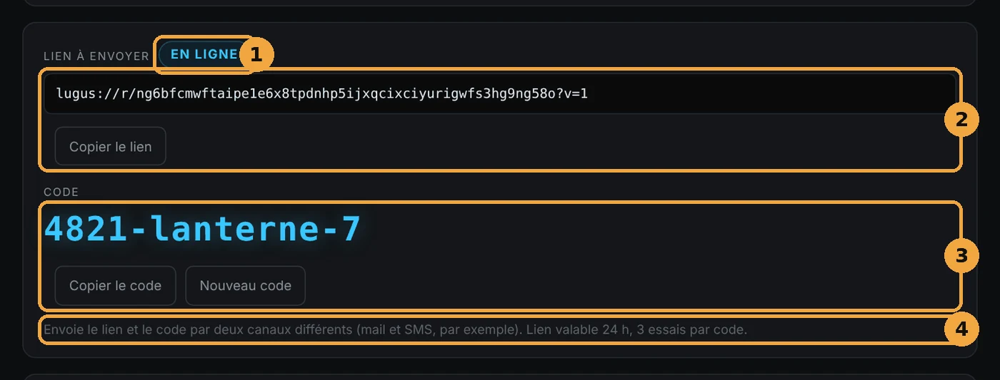
En ligne : le destinataire peut désormais joindre votre ordinateur. Si le badge affiche Pas encore visible après 90 secondes, le lien peut fonctionner quand même : envoyez-le, et laissez Lugus Transfer ouvert.
Le lien (lugus://r/…) et son bouton Copier le lien.
Le code (par exemple 4821-lanterne-7), avec Copier le code et Nouveau code.
Le rappel : transmettez le lien et le code par deux canaux différents, par exemple le lien par mail et le code par SMS. Le lien est valable 24 heures, avec 3 essais par code.
Quelqu'un qui n'a que le lien ne peut rien en faire : il lui faut aussi le code.
Étape 4 : attendre le destinataire
Laissez Lugus Transfer ouvert. Quand le destinataire saisit le code, la phrase d'état indique qu'un destinataire se connecte et que le code est vérifié.
Code incorrect : le journal le signale et indique le nombre d'essais restants. Le destinataire peut réessayer après un court délai.
3 essais ratés : le code est bloqué. Cliquez sur Nouveau code et transmettez le nouveau code. Le lien ne change pas.
Code accepté : le destinataire choisit les fichiers qu'il veut. La phrase d'état le dit.
Étape 5 : le transfert
Le pourcentage et la barre bleue : ce que le destinataire a reçu.
La barre verte : ce qui a déjà été relu et vérifié sur le disque du destinataire. Chaque fichier est vérifié dès qu'il est complet : la barre verte suit la bleue.
Débit, temps restant, temps écoulé et chemin réseau.
Le journal : connexion, code, fichiers choisis par le destinataire.
Arrêter : met fin au transfert et ferme le lien. Rien de ce qui a déjà été reçu n'est perdu de l'autre côté (voir la section 8).
Les chiffres affichés sont ceux du destinataire : après une interruption et une reprise, les deux écrans affichent le même pourcentage.
Étape 6 : la vérification chez le destinataire
Quand tout est envoyé, le transfert n'est pas encore fini. Le destinataire relit les derniers fichiers sur son disque :
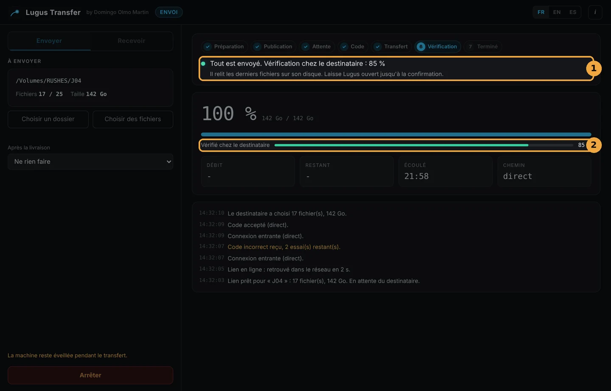
La phrase d'état affiche Tout est envoyé. Vérification chez le destinataire, avec le pourcentage.
La barre verte continue jusqu'à 100 %.
Laissez Lugus Transfer ouvert jusqu'à la confirmation.
Étape 7 : livré
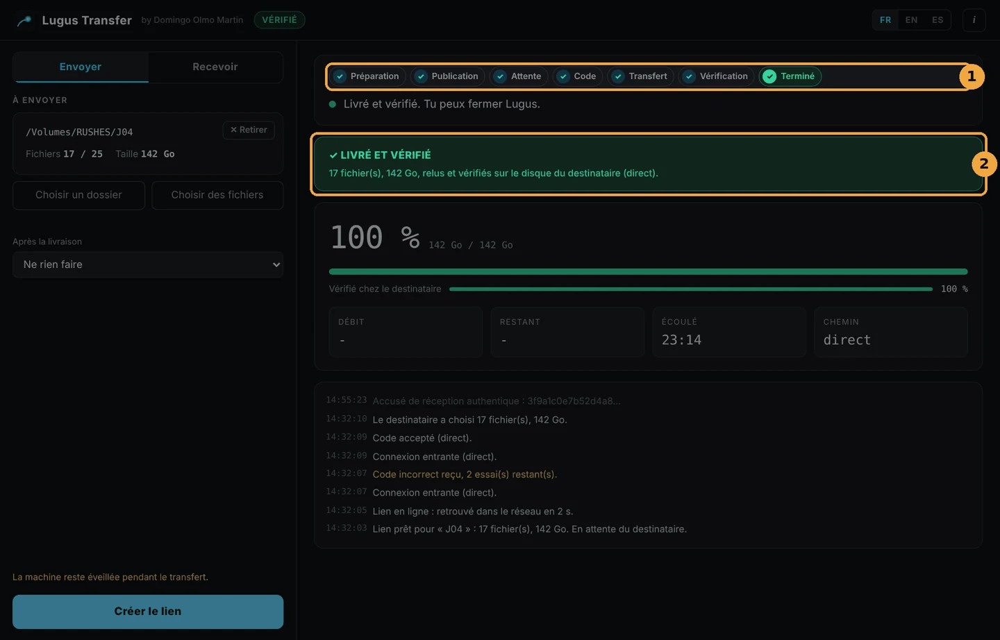
Toutes les étapes sont cochées et Terminé passe au vert.
Le bandeau ✓ LIVRÉ ET VÉRIFIÉ donne le nombre de fichiers et la taille, relus et vérifiés sur le disque du destinataire.
Le destinataire a envoyé un accusé de réception authentifié : il ne peut venir que de la personne qui a saisi le bon code. Vous pouvez fermer Lugus Transfer. Le lien a alors servi : pour envoyer à quelqu'un d'autre, créez un nouveau lien.
5. Recevoir des rushes, pas à pas
Étape 1 : lien, code et destination
Cliquez sur Recevoir, en haut à gauche.
Lien : collez le lien reçu. Lien valide confirme sa forme.
Code : tapez le code. Il est vérifié sur votre ordinateur avant tout envoi : une faute de frappe est repérée tout de suite et ne consomme jamais d'essai.
Destination : cliquez sur Choisir et sélectionnez le dossier où arriveront les rushes. Un dossier arrive dans un sous-dossier à son nom, de même que plusieurs fichiers envoyés ensemble (au nom du dossier d'où ils viennent). Un fichier seul arrive directement dans la destination.
Mode Noctiluca : pour recevoir pendant la nuit (voir la section 6).
Recevoir : lance la réception.
Lugus Transfer cherche alors l'expéditeur sur le réseau. Cela prend en général quelques secondes. Si l'expéditeur n'est pas encore trouvé (fréquent juste après la création du lien), Lugus Transfer réessaie tout seul pendant 90 secondes et affiche le numéro de l'essai.
Étape 2 : choisir les fichiers
Une fois le code accepté, le contenu proposé par l'expéditeur s'affiche, tout coché :
La phrase d'état vous invite à choisir les fichiers.
Les filtres rapides : Tout, Rien, Originaux, Proxys, Annexes. Ici, les originaux ont été décochés pour recevoir d'abord les proxys.
L'arbre, avec une case pour chaque fichier et chaque dossier.
Recevoir la sélection lance le transfert.
Ce que vous laissez de côté maintenant pourra être reçu plus tard avec le même lien et le même code : les fichiers déjà reçus et vérifiés sont sautés.
Étape 3 : le transfert
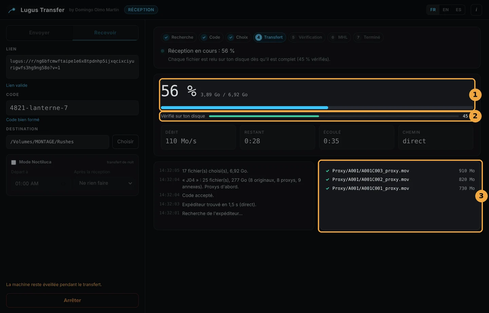
Le pourcentage et la barre bleue : ce qui a été reçu.
La barre verte : ce qui a déjà été relu sur votre disque et vérifié.
Les fichiers vérifiés, un par un, le plus récent en haut.
Les proxys et les fichiers annexes arrivent en premier, puis les originaux. Jusqu'à 4 fichiers sont reçus en même temps.
Étape 4 : la vérification sur votre disque
Quand tout est reçu, Lugus Transfer finit de relire les derniers fichiers :
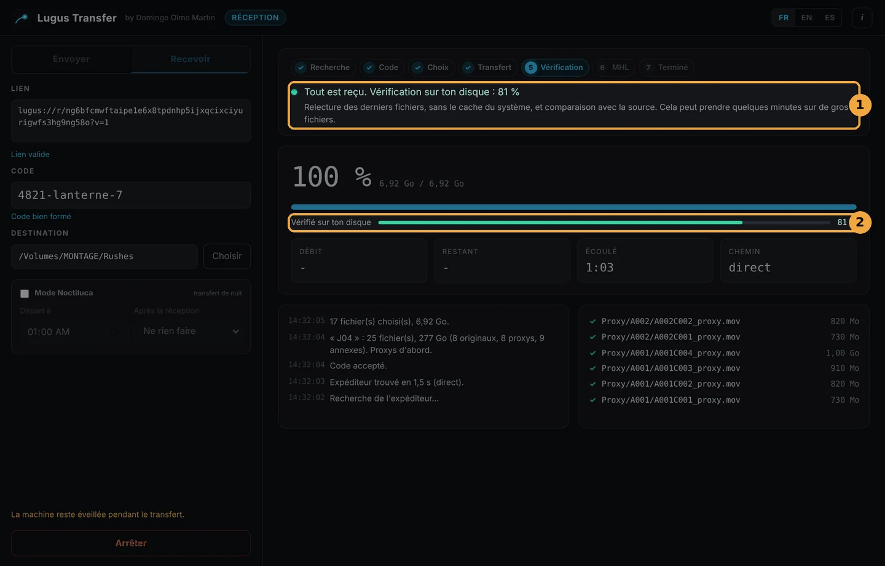
La phrase d'état affiche Tout est reçu. Vérification sur ton disque, avec le pourcentage. Sur de gros fichiers, cela peut prendre quelques minutes : chaque fichier est relu en entier sur le disque, sans le cache du système, et comparé à la source.
La barre verte continue jusqu'à 100 %.
Étape 5 : MHL et accusé de réception
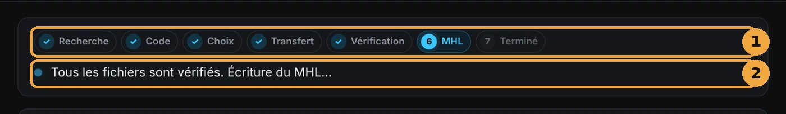
L'étape MHL est active.
La phrase d'état indique que tous les fichiers sont vérifiés et que le MHL est en cours d'écriture, puis que l'accusé de réception part chez l'expéditeur.
Étape 6 : reçu
Le bandeau ✓ REÇU ET VÉRIFIÉ : nombre de fichiers, taille, durée et chemin réseau.
Ouvrir le dossier ouvre le dossier reçu, Afficher le MHL montre le fichier MHL.
La liste des fichiers vérifiés.
Le MHL s'appelle <nom>_lugus_<date>.mhl, par exemple J04_lugus_2026-11-15_143212.mhl. Il n'écrase jamais un MHL déjà présent dans le dossier, comme celui écrit par Bandua sur le plateau.
6. Mode Noctiluca : recevoir pendant la nuit
Les gros transferts se font mieux la nuit, quand la connexion est libre et que personne n'a besoin de l'ordinateur. Le mode Noctiluca programme la réception et gère la fin tout seul.
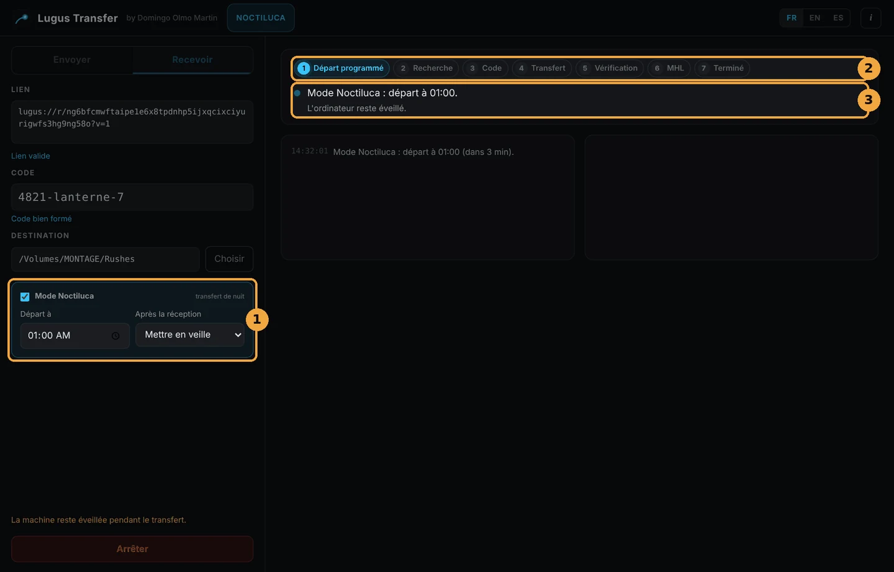
Cochez Mode Noctiluca, réglez l'heure de Départ à (01:00 par exemple), et choisissez ce qui se passe Après la réception : ne rien faire, mettre en veille ou éteindre l'ordinateur. Cliquez ensuite sur Programmer la réception.
Les étapes commencent par Départ programmé.
La phrase d'état rappelle l'heure de départ. L'ordinateur reste éveillé jusque-là.
Le lien et le code sont vérifiés avant l'attente : une faute de frappe se voit tout de suite, et pas à une heure du matin. Si l'heure est déjà passée aujourd'hui, la réception démarre le lendemain à cette heure.
En mode Noctiluca, personne n'est là pour choisir les fichiers : tout ce que propose l'expéditeur est reçu. L'ordinateur de l'expéditeur doit être allumé et Lugus Transfer ouvert à l'heure du départ.
Quand tout est vérifié, l'ordinateur se met en veille ou s'éteint. Sous Windows, l'extinction laisse 60 secondes pour l'annuler.
7. Ce que Lugus Transfer fait pour protéger vos rushes
Tout cela se passe en arrière-plan, sans réglage de votre part.
Rien au milieu. Les fichiers vont d'un ordinateur à l'autre. Ils ne sont jamais stockés sur un serveur. Même quand la connexion passe par un relais public, elle reste chiffrée de bout en bout : le relais ne fait que transmettre des données qu'il ne peut pas lire.
Le code ne circule jamais. Les deux ordinateurs se prouvent mutuellement qu'ils connaissent le code (SPAKE2) sans jamais l'envoyer. Quelqu'un qui intercepte le lien n'apprend rien, et n'a que 3 essais.
Chaque bloc est contrôlé. Les fichiers circulent par blocs de 4 Mo. L'expéditeur calcule le hash de chaque bloc au moment où il le lit sur son disque ; le destinataire le contrôle avant d'écrire le bloc.
Écriture sûre. Chaque fichier est d'abord écrit sous un nom temporaire (.lugus-part), avec un journal (.lugus-journal) qui note chaque bloc écrit. Un fichier ne prend son vrai nom qu'une fois vérifié. Un fichier qui porte son nom définitif est donc un fichier contrôlé.
Vérification sur le disque, pas en mémoire. À la fin de chaque fichier, le destinataire le relit sur le disque en contournant le cache du système, et compare chaque bloc, puis le fichier entier, au hash de la source (BLAKE3). Au moindre écart, le fichier est refusé et sa progression effacée, pour qu'il soit reçu à nouveau depuis le début.
Dates d'origine conservées. Les fichiers reçus prennent la date de modification de la source.
Accusé de réception authentifié. À la fin, le destinataire envoie à l'expéditeur un accusé que lui seul peut produire. C'est lui qui fait passer l'écran de l'expéditeur à Livré et vérifié.
8. Interruptions et erreurs
Reprendre après une interruption
Coupure du réseau, fenêtre fermée, ordinateur mis en veille, Arrêter cliqué par erreur : le transfert peut reprendre exactement là où il s'est arrêté.
Côté expéditeur, rien à faire : Lugus Transfer reste en attente, le lien reste valable (24 heures). Si l'expéditeur a fermé Lugus Transfer ou cliqué sur Arrêter, il crée un nouveau lien pour les mêmes fichiers et le transmet.
Côté destinataire, relancez la réception avec le lien et le code (les mêmes, ou les nouveaux), et la même destination. Chaque fichier reprend après son dernier bloc écrit et contrôlé ; les fichiers déjà complets sont relus et vérifiés à nouveau, puis sautés.
Les deux écrans affichent le même avancement dès que les ordinateurs se reconnectent. Juste après une reprise, la barre verte peut repartir plus bas que la bleue : les fichiers déjà présents sont relus une fois de plus avant d'être comptés comme vérifiés.
En cas d'erreur
Ce que vous voyez
Ce que ça veut dire
Que faire
« Expéditeur pas encore trouvé, nouvel essai… »
Le lien n'est pas encore visible sur le réseau, ou le réseau répond mal.
Patientez : Lugus Transfer réessaie tout seul pendant 90 secondes.
« Expéditeur introuvable » (après 90 secondes)
L'ordinateur de l'expéditeur est éteint ou en veille, Lugus Transfer est fermé, ou le lien n'est pas le bon.
Vérifiez avec l'expéditeur que Lugus Transfer est ouvert, puis relancez.
« Code incorrect, N essai(s) restant(s) »
Le code saisi ne correspond pas.
Vérifiez le code. Attendez quelques secondes entre deux essais.
« Ce code est bloqué »
3 essais ont échoué.
Demandez un nouveau code à l'expéditeur (Nouveau code). Le lien ne change pas.
« Connexion perdue »
Le réseau a coupé, ou l'autre ordinateur s'est mis en veille ou a été fermé.
Relancez la réception avec le même lien et le même code : elle reprend là où elle s'est arrêtée.
« Ce lien a expiré »
Plus de 24 heures se sont écoulées.
L'expéditeur crée un nouveau lien.
« Un autre fichier du même nom existe déjà à destination »
Un fichier de même nom, mais différent, se trouve déjà dans le dossier de destination.
Choisissez une autre destination, ou déplacez l'ancien fichier. Lugus Transfer n'écrase jamais rien.
« Le fichier relu sur le disque ne correspond pas à la source »
Ce qui a été écrit sur le disque n'est pas ce qui a été envoyé : problème de disque, de câble ou de connexion chez le destinataire.
Relancez la réception : le fichier est reçu à nouveau depuis le début. Si cela se reproduit, vérifiez le disque de destination.
« Un fichier a changé chez l'expéditeur depuis la création du lien »
Le fichier source a été modifié, ou était encore en cours d'écriture à la création du lien.
L'expéditeur attend la fin de la copie ou de l'export, puis crée un nouveau lien.
9. Bonnes pratiques
Transmettez le lien et le code par deux canaux différents. Le lien seul ne sert à rien, et c'est voulu.
Branchez les deux ordinateurs sur secteur. Un transfert de plusieurs centaines de gigaoctets prend des heures.
Laissez un portable ouvert. Lugus Transfer garde l'ordinateur éveillé, mais fermer le capot met en général un portable en veille malgré tout.
Demandez d'abord les proxys si le montage doit commencer vite, puis les originaux, la nuit, en mode Noctiluca.
Attendez Livré et vérifié avant de supprimer quoi que ce soit chez l'expéditeur, et gardez de toute façon les copies d'origine jusqu'à ce que les rushes soient sauvegardés chez le destinataire.
Contrôlez le MHL avec Bandua MHL Companion quand les rushes changent encore de disque.
10. Questions fréquentes
Quelle est la vitesse ?
Celle que permet la plus lente des deux connexions, souvent le débit montant de l'expéditeur. Sur un même réseau local, le transfert va à la vitesse du réseau local. La case Chemin indique si la connexion est réseau local, direct ou relais ; un relais est plus lent.
Y a-t-il une limite de taille ?
Non. Lugus Transfer est fait pour de très gros fichiers et des journées de tournage entières.
Les deux ordinateurs doivent-ils être allumés en même temps ?
Oui. Rien n'est stocké entre les deux : les fichiers passent directement de l'un à l'autre. Le mode Noctiluca permet de programmer la réception à un moment où les deux sont libres.
Puis-je envoyer à plusieurs personnes ?
Un lien sert à une livraison. Pour envoyer les mêmes rushes à quelqu'un d'autre, créez un nouveau lien.
Qu'est-ce qui passe sur Internet ?
Pour être trouvé, l'expéditeur publie ses adresses réseau, signées par une clé à usage unique, dans la DHT publique de BitTorrent. Les fichiers, les noms de dossiers et le code ne sont jamais publiés : ils ne circulent que chiffrés, entre les deux ordinateurs.
Le logiciel du monteur peut-il lire le MHL ?
Oui, c'est du MHL 1.1 en xxHash64, le standard lu par Silverstack, ShotPut Pro, Hedge et Bandua MHL Companion.
Lugus Transfer fonctionne-t-il sous Linux ?
Pas pour l'instant. Le code reste compatible, mais il n'y a pas de version Linux tant qu'elle ne peut pas être testée. L'outil en ligne de commande peut être compilé sous Linux à partir du code source.
11. Avertissement et licence
Lugus Transfer est un outil d'aide au transfert et à la vérification de médias. Il ne remplace pas vos propres contrôles ni vos procédures de sauvegarde. Le logiciel est fourni « tel quel », sans aucune garantie. L'auteur ne pourra être tenu responsable d'aucune perte, corruption ou suppression de données, de rushes ou de supports, ni d'aucun dommage direct ou indirect (coûts de production, retournages, perte de revenus…) résultant de l'utilisation, d'une mauvaise utilisation ou d'un dysfonctionnement du logiciel.
Ne supprimez jamais l'original avant d'avoir vérifié que la copie reçue est complète et lisible.
Lugus Transfer envía tu material directamente de un ordenador a otro. El remitente crea un enlace y un código, el destinatario los introduce, y los archivos pasan directamente de una máquina a la otra, cifrados de extremo a extremo. Sin servidor en medio, sin almacenamiento en la nube y sin cuenta.
La regla es la misma que en el rodaje: una transferencia solo termina cuando los archivos se han comprobado a la llegada. Lugus Transfer relee cada archivo recibido en el disco del destinatario, lo compara con el origen y solo entonces lo declara «verificado». Se escribe un archivo MHL en la carpeta recibida, y el remitente recibe un acuse de recibo.
Lugus Transfer es gratuito, de código abierto (licencia MIT) y no pide ni cuenta ni licencia.
El remitente y el destinatario necesitan Lugus Transfer, pero no el mismo sistema: un Mac puede enviar a un PC, y al revés.
Primer arranque
La aplicación todavía no está firmada, así que tu sistema muestra un aviso, una sola vez:
Windows: haz clic en «Más información» y después en «Ejecutar de todas formas».
macOS: haz clic derecho en la aplicación, elige «Abrir» y confirma.
También puede que el navegador marque la descarga como inusual. Es habitual con una aplicación reciente y sin firmar. Conserva el archivo desde el panel de descargas. Si tienes dudas, analízalo en VirusTotal.
Si tu sistema o tu cortafuegos pregunta si Lugus Transfer puede usar la red, permítelo. Así es como los dos ordenadores se encuentran.
Ventana de bienvenida
En el primer arranque, Lugus Transfer muestra un aviso de exención de responsabilidad (1). Léelo y haz clic en Lo he entendido y acepto (2). Lo encontrarás después en Acerca de (el botón i).
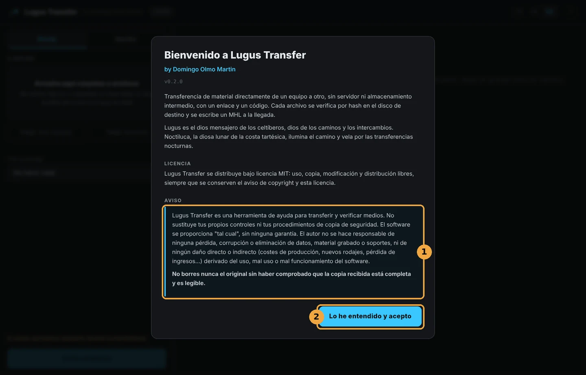
3. La interfaz de un vistazo
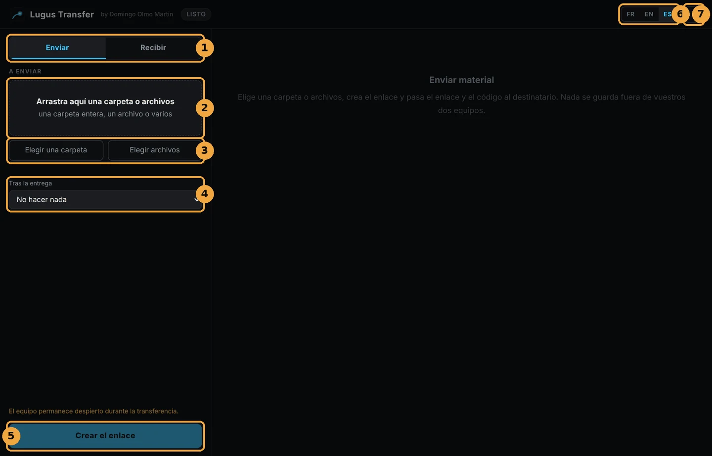
Enviar / Recibir: los dos modos de la aplicación. La misma aplicación sirve en los dos lados.
Zona de depósito: suelta aquí una carpeta, un archivo o varios archivos.
Elegir una carpeta / Elegir archivos: lo mismo con la ventana del sistema. «Elegir archivos» permite seleccionar varios a la vez.
Tras la entrega: no hacer nada, suspender el ordenador o apagarlo cuando el destinatario haya confirmado la entrega.
Botón principal: Crear el enlace para enviar, Recibir para recibir, y después Detener durante una transferencia.
FR / EN / ES: cambia al instante el idioma de la interfaz.
Acerca de (el botón i): versión, licencia y aviso.
Durante una transferencia, la parte derecha muestra:
- una fila de pasos numerados, con el paso actual resaltado;
- una frase de estado, en palabras sencillas, que dice lo que ocurre y lo que hay que hacer;
- el avance: porcentaje, una barra azul para los datos transferidos, una barra verde para los datos ya verificados en el disco del destinatario, velocidad, tiempo restante, tiempo transcurrido y camino de red (red local, directa o relé);
- el registro y, al recibir, la lista de archivos verificados.
Arriba, la etiqueta junto al nombre de la aplicación resume el estado: Listo, Preparando, Publicando, En espera, Enviando, Buscando, Elección, Recibiendo, Noctiluca, Verificado, Error, Detenido.
La línea El equipo permanece despierto durante la transferencia recuerda que Lugus Transfer impide que el ordenador entre en reposo solo mientras trabaja.
4. Enviar material, paso a paso
Paso 1: elegir qué se envía
Suelta una carpeta en la ventana o haz clic en Elegir una carpeta. También puedes enviar:
- un solo archivo: llegará solo a la carpeta del destinatario;
- varios archivos: suéltalos juntos o selecciónalos con Elegir archivos. Deben venir de la misma carpeta.
Cuando eliges una carpeta o varios archivos, su contenido aparece a la derecha, todo marcado:
Los filtros rápidos: Todo, Nada, y después Originales, Proxies y Anexos (XML, LUT, sonido, informes…) con su número. Un clic marca o desmarca toda la categoría.
El árbol de la carpeta: haz clic en el nombre de una carpeta para abrirla, marca o desmarca un archivo o una carpeta entera. Una casilla a medio llenar significa que parte de la carpeta está elegida.
El total de lo que se enviará: número de archivos y tamaño.
El resumen de la izquierda muestra el mismo total, por ejemplo Archivos 17 / 25. El botón ✕ Quitar lo borra todo para empezar de cero.
No hace falta hacer clic en Quitar para cambiar de idea: elegir otra carpeta u otros archivos sustituye sin más la elección anterior.
Paso 2: tras la entrega (opcional)
En Tras la entrega, elige lo que hará el ordenador cuando el destinatario haya confirmado la entrega: No hacer nada, Suspender o Apagar el ordenador. Útil cuando envías un gran volumen antes de irte.
Paso 3: crear el enlace
Haz clic en Crear el enlace. Lugus Transfer analiza los archivos y publica el enlace en la red:
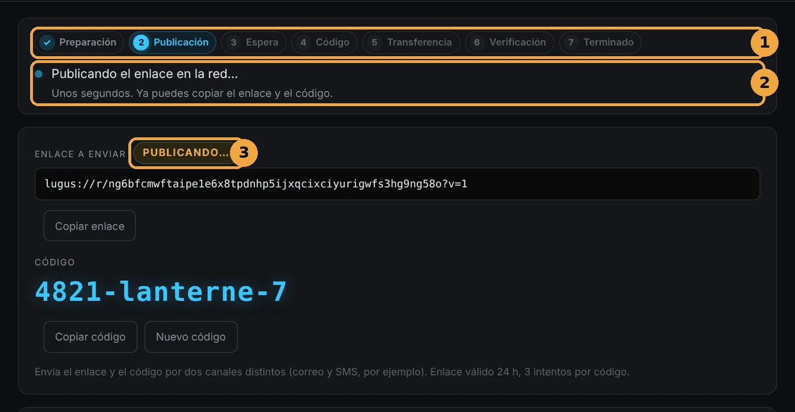
Los pasos pasan de Preparación a Publicación.
La frase de estado indica que el enlace se está publicando. Tarda unos segundos, y ya puedes copiar el enlace y el código.
La etiqueta junto al enlace muestra Publicando….
En cuanto el enlace se puede encontrar en la red, la etiqueta cambia a En línea:
En línea: el destinatario ya puede llegar a tu ordenador. Si la etiqueta muestra Aún no visible después de 90 segundos, el enlace puede funcionar de todos modos: envíalo y deja Lugus Transfer abierto.
El enlace (lugus://r/…) y su botón Copiar enlace.
El código (por ejemplo 4821-lanterne-7), con Copiar código y Nuevo código.
El recordatorio: envía el enlace y el código por dos canales distintos, por ejemplo el enlace por correo y el código por SMS. El enlace es válido 24 horas, con 3 intentos por código.
Quien solo tenga el enlace no puede hacer nada con él: también necesita el código.
Paso 4: esperar al destinatario
Deja Lugus Transfer abierto. Cuando el destinatario introduce el código, la frase de estado indica que un destinatario se está conectando y que se está comprobando el código.
Código incorrecto: el registro lo indica y muestra cuántos intentos quedan. El destinatario puede volver a intentarlo tras una breve espera.
3 intentos fallidos: el código queda bloqueado. Haz clic en Nuevo código y envía el nuevo código. El enlace no cambia.
Código aceptado: el destinatario elige los archivos que quiere. La frase de estado lo indica.
Paso 5: la transferencia
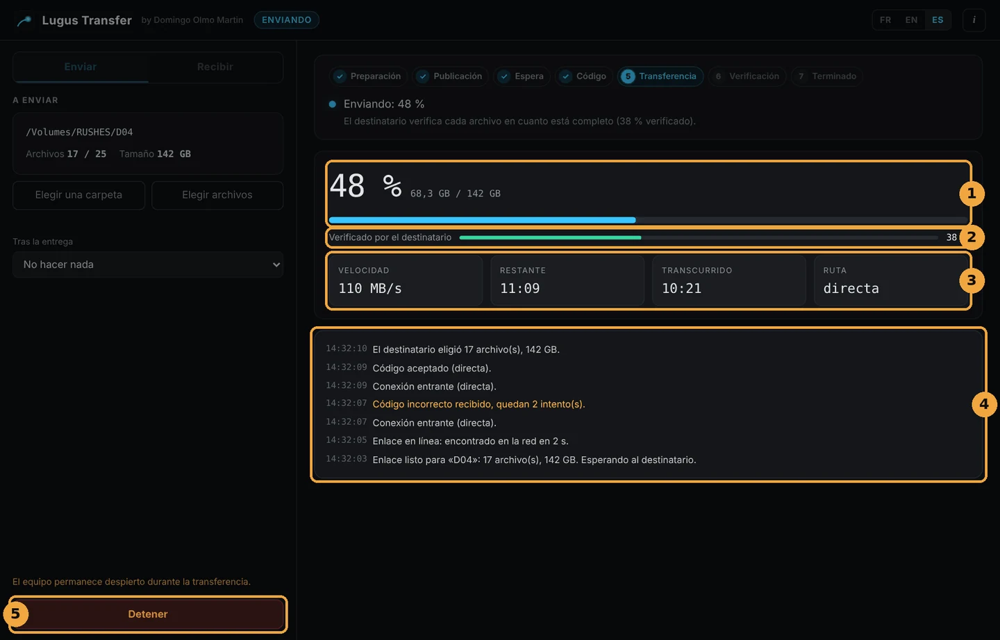
El porcentaje y la barra azul: lo que ha recibido el destinatario.
La barra verde: lo que ya se ha releído y verificado en el disco del destinatario. Cada archivo se verifica en cuanto está completo, así que la barra verde sigue a la azul.
Velocidad, tiempo restante, tiempo transcurrido y camino de red.
El registro: conexión, código, archivos elegidos por el destinatario.
Detener: termina la transferencia y cierra el enlace. No se pierde nada de lo ya recibido al otro lado (ver la sección 8).
Las cifras que se muestran son las del destinatario: tras una interrupción y una reanudación, las dos pantallas muestran el mismo porcentaje.
Paso 6: la verificación en el equipo del destinatario
Cuando todo está enviado, la transferencia todavía no ha terminado. El destinatario relee los últimos archivos de su disco:
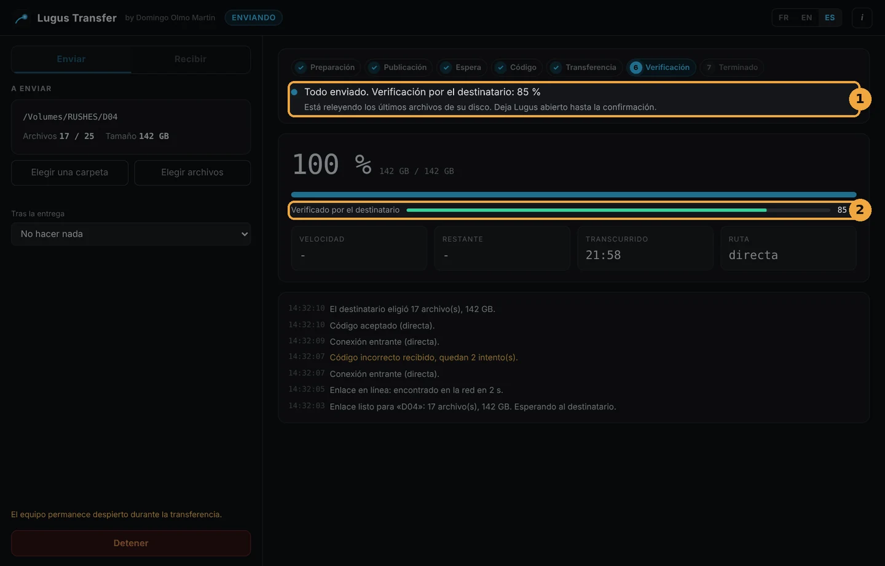
La frase de estado muestra Todo enviado. Verificación por el destinatario, con el porcentaje.
La barra verde sigue hasta el 100 %.
Deja Lugus Transfer abierto hasta la confirmación.
Paso 7: entregado
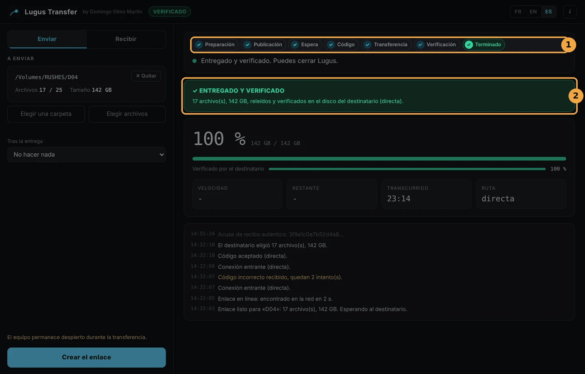
Todos los pasos están marcados y Terminado se pone en verde.
El aviso ✓ ENTREGADO Y VERIFICADO da el número de archivos y el tamaño, releídos y verificados en el disco del destinatario.
El destinatario ha enviado un acuse de recibo autenticado: solo puede venir de la persona que introdujo el código correcto. Puedes cerrar Lugus Transfer. El enlace ya se ha usado: para enviar a otra persona, crea un nuevo enlace.
5. Recibir material, paso a paso
Paso 1: enlace, código y destino
Haz clic en Recibir, arriba a la izquierda.
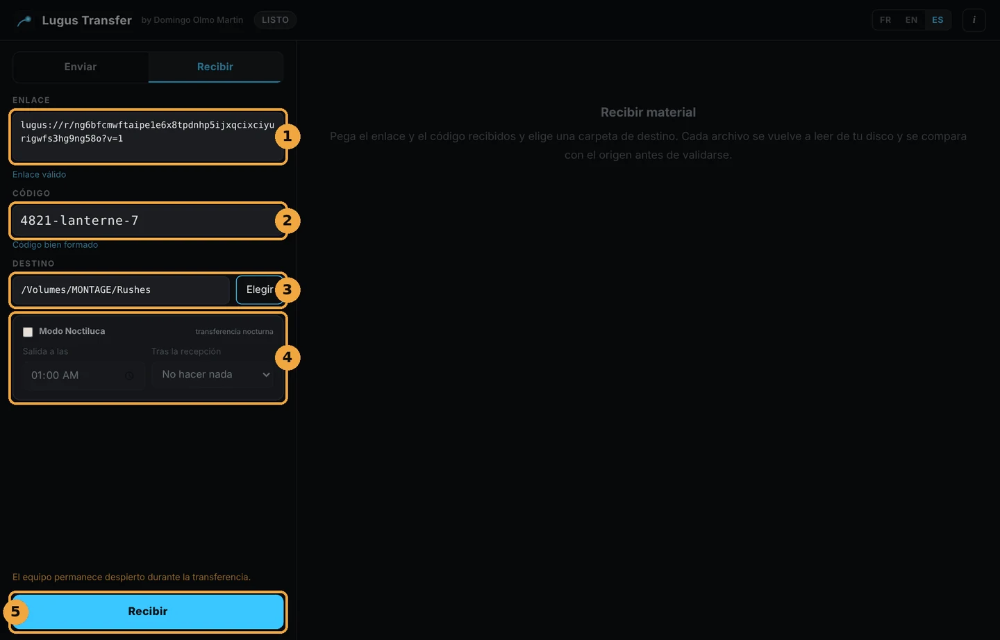
Enlace: pega el enlace que te han enviado. Enlace válido confirma su forma.
Código: escribe el código. Se comprueba en tu ordenador antes de cualquier envío: una errata se detecta en el acto y nunca gasta un intento.
Destino: haz clic en Elegir y selecciona la carpeta donde llegará el material. Una carpeta llega en una subcarpeta con su nombre, igual que varios archivos enviados juntos (con el nombre de la carpeta de la que vienen). Un archivo solo llega directamente al destino.
Modo Noctiluca: para recibir de noche (ver la sección 6).
Recibir: inicia la recepción.
Lugus Transfer busca entonces al remitente en la red. Suele tardar unos segundos. Si todavía no encuentra al remitente (habitual justo después de crear el enlace), Lugus Transfer lo reintenta solo durante 90 segundos y muestra el número de intento.
Paso 2: elegir los archivos
Una vez aceptado el código, aparece el contenido que ofrece el remitente, todo marcado:
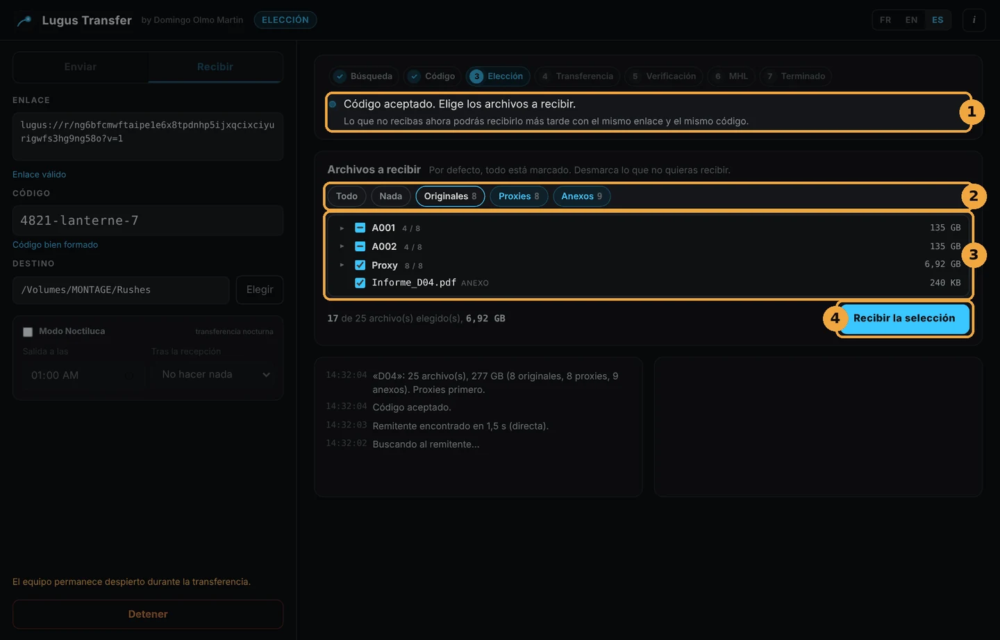
La frase de estado te pide que elijas los archivos.
Los filtros rápidos: Todo, Nada, Originales, Proxies, Anexos. Aquí se han desmarcado los originales para recibir primero los proxies.
El árbol, con una casilla para cada archivo y cada carpeta.
Recibir la selección inicia la transferencia.
Lo que dejes de lado ahora podrás recibirlo más tarde con el mismo enlace y el mismo código: los archivos ya recibidos y verificados se saltan.
Paso 3: la transferencia
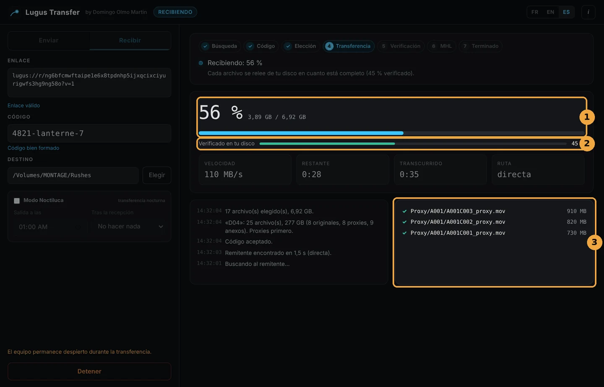
El porcentaje y la barra azul: lo que se ha recibido.
La barra verde: lo que ya se ha releído de tu disco y verificado.
Los archivos verificados, uno a uno, el más reciente arriba.
Los proxies y los archivos anexos llegan primero, después los originales. Se reciben hasta 4 archivos a la vez.
Paso 4: la verificación en tu disco
Cuando todo está recibido, Lugus Transfer termina de releer los últimos archivos:
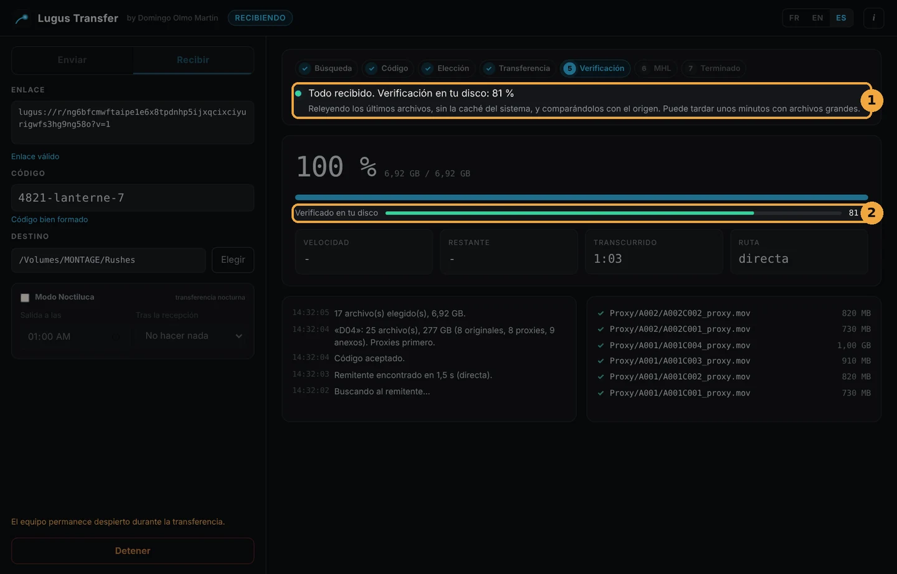
La frase de estado muestra Todo recibido. Verificación en tu disco, con el porcentaje. Con archivos grandes, puede tardar unos minutos: cada archivo se relee entero del disco, sin la caché del sistema, y se compara con el origen.
La barra verde sigue hasta el 100 %.
Paso 5: MHL y acuse de recibo
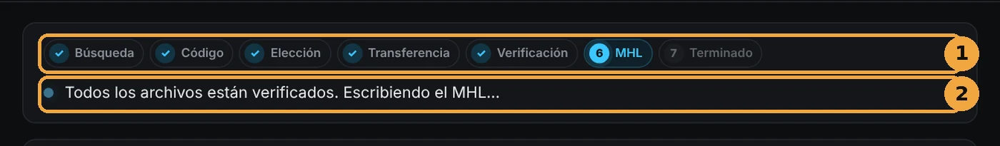
El paso MHL está activo.
La frase de estado indica que todos los archivos están verificados y que se está escribiendo el MHL, y después que el acuse de recibo sale hacia el remitente.
Paso 6: recibido
El aviso ✓ RECIBIDO Y VERIFICADO: número de archivos, tamaño, duración y camino de red.
Abrir la carpeta abre la carpeta recibida, Mostrar el MHL muestra el archivo MHL.
La lista de archivos verificados.
El MHL se llama <nombre>_lugus_<fecha>.mhl, por ejemplo D04_lugus_2026-11-15_143212.mhl. Nunca sobrescribe un MHL que ya esté en la carpeta, como el que escribe Bandua en el rodaje.
6. Modo Noctiluca: recibir de noche
Las transferencias grandes se hacen mejor de noche, cuando la conexión está libre y nadie necesita el ordenador. El modo Noctiluca programa la recepción y se ocupa del final solo.
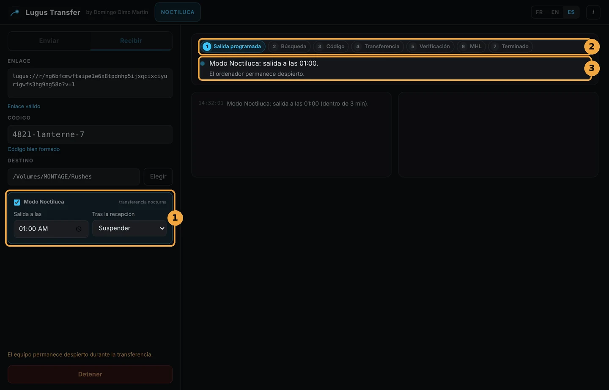
Marca Modo Noctiluca, ajusta la hora de Salida a las (la 01:00, por ejemplo) y elige qué ocurre Tras la recepción: no hacer nada, suspender o apagar el ordenador. Después haz clic en Programar la recepción.
Los pasos empiezan por Salida programada.
La frase de estado recuerda la hora de salida. El ordenador permanece despierto hasta entonces.
El enlace y el código se comprueban antes de la espera: una errata se ve en el acto, y no a la una de la madrugada. Si la hora ya ha pasado hoy, la recepción empieza al día siguiente a esa hora.
En modo Noctiluca no hay nadie para elegir los archivos: se recibe todo lo que ofrece el remitente. El ordenador del remitente debe estar encendido y Lugus Transfer abierto a la hora de salida.
Cuando todo está verificado, el ordenador se suspende o se apaga. En Windows, el apagado deja 60 segundos para cancelarlo.
7. Lo que hace Lugus Transfer para proteger tu material
Todo esto ocurre en segundo plano, sin nada que ajustar.
Nada en medio. Los archivos van de un ordenador al otro. Nunca se guardan en un servidor. Incluso cuando la conexión pasa por un relé público, sigue cifrada de extremo a extremo: el relé solo transmite datos que no puede leer.
El código nunca viaja. Los dos ordenadores se demuestran mutuamente que conocen el código (SPAKE2) sin enviarlo nunca. Quien intercepte el enlace no aprende nada, y solo tiene 3 intentos.
Cada bloque se comprueba. Los archivos viajan en bloques de 4 MB. El remitente calcula el hash de cada bloque al leerlo de su disco; el destinatario lo comprueba antes de escribir el bloque.
Escritura segura. Cada archivo se escribe primero con un nombre temporal (.lugus-part), con un diario (.lugus-journal) que anota cada bloque escrito. Un archivo solo recibe su nombre real cuando está verificado. Un archivo con su nombre definitivo es, por tanto, un archivo comprobado.
Verificación en el disco, no en memoria. Al final de cada archivo, el destinatario lo relee del disco evitando la caché del sistema, y compara cada bloque, y después el archivo entero, con el hash del origen (BLAKE3). Ante la menor diferencia, el archivo se rechaza y su avance se borra, para que se reciba de nuevo desde el principio.
Fechas originales conservadas. Los archivos recibidos toman la fecha de modificación del origen.
Acuse de recibo autenticado. Al final, el destinatario envía al remitente un acuse que solo él puede producir. Es lo que pone la pantalla del remitente en Entregado y verificado.
8. Interrupciones y errores
Reanudar tras una interrupción
Corte de red, ventana cerrada, ordenador en reposo, Detener pulsado por error: la transferencia puede reanudarse justo donde se detuvo.
En el lado del remitente, nada que hacer: Lugus Transfer sigue esperando, el enlace sigue siendo válido (24 horas). Si el remitente cerró Lugus Transfer o pulsó Detener, crea un nuevo enlace para los mismos archivos y lo envía.
En el lado del destinatario, vuelve a lanzar la recepción con el enlace y el código (los mismos o los nuevos) y el mismo destino. Cada archivo se reanuda tras su último bloque escrito y comprobado; los archivos ya completos se releen y se verifican otra vez, y después se saltan.
Las dos pantallas muestran el mismo avance desde que los ordenadores vuelven a conectarse. Justo después de una reanudación, la barra verde puede empezar más abajo que la azul: los archivos ya presentes se releen una vez más antes de contar como verificados.
Cuando algo va mal
Lo que ves
Qué significa
Qué hacer
«Remitente aún no encontrado, nuevo intento…»
El enlace todavía no es visible en la red, o la red responde mal.
Espera: Lugus Transfer lo reintenta solo durante 90 segundos.
«Remitente no encontrado» (tras 90 segundos)
El ordenador del remitente está apagado o en reposo, Lugus Transfer está cerrado, o el enlace no es el correcto.
Comprueba con el remitente que Lugus Transfer está abierto y vuelve a empezar.
«Código incorrecto, quedan N intento(s)»
El código introducido no coincide.
Revisa el código. Espera unos segundos entre intentos.
«Este código está bloqueado»
Han fallado 3 intentos.
Pide un nuevo código al remitente (Nuevo código). El enlace no cambia.
«Conexión perdida»
La red se ha cortado, o el otro ordenador ha entrado en reposo o se ha cerrado.
Vuelve a lanzar la recepción con el mismo enlace y el mismo código: se reanuda donde se detuvo.
«Este enlace ha caducado»
Han pasado más de 24 horas.
El remitente crea un nuevo enlace.
«Ya existe en el destino otro archivo con el mismo nombre»
Un archivo con el mismo nombre, pero distinto, ya está en la carpeta de destino.
Elige otro destino o mueve el archivo antiguo. Lugus Transfer nunca sobrescribe nada.
«El archivo releído del disco no coincide con el origen»
Lo que se escribió en el disco no es lo que se envió: un problema de disco, de cable o de conexión en el equipo del destinatario.
Vuelve a lanzar la recepción: el archivo se recibe de nuevo desde el principio. Si se repite, revisa el disco de destino.
«Un archivo ha cambiado en el equipo del remitente desde que se creó el enlace»
El archivo de origen se ha modificado, o todavía se estaba escribiendo cuando se creó el enlace.
El remitente espera a que termine la copia o la exportación y crea un nuevo enlace.
9. Buenas prácticas
Envía el enlace y el código por dos canales distintos. El enlace solo no sirve para nada, y esa es la idea.
Conecta los dos ordenadores a la corriente. Una transferencia de varios cientos de gigabytes dura horas.
Deja abierto un portátil. Lugus Transfer mantiene el ordenador despierto, pero cerrar la tapa suele suspender un portátil de todos modos.
Pide primero los proxies si el montaje tiene que empezar pronto, y después los originales, de noche, en modo Noctiluca.
Espera a Entregado y verificado antes de borrar nada en el equipo del remitente, y conserva de todos modos las copias originales hasta que el material esté respaldado en el equipo del destinatario.
Comprueba el MHL con Bandua MHL Companion cuando el material vuelva a cambiar de disco.
10. Preguntas frecuentes
¿Qué velocidad tiene?
La que permita la más lenta de las dos conexiones, a menudo la subida del remitente. En una misma red local, la transferencia va a la velocidad de la red local. La casilla Ruta indica si la conexión es red local, directa o relé; un relé es más lento.
¿Hay un límite de tamaño?
No. Lugus Transfer está hecho para archivos muy grandes y jornadas de rodaje completas.
¿Tienen que estar encendidos los dos ordenadores a la vez?
Sí. No se guarda nada entre los dos: los archivos pasan directamente de uno a otro. El modo Noctiluca permite programar la recepción para un momento en que los dos estén libres.
¿Puedo enviar a varias personas?
Un enlace sirve para una entrega. Para enviar el mismo material a otra persona, crea un nuevo enlace.
¿Qué pasa por Internet?
Para que lo encuentren, el remitente publica sus direcciones de red, firmadas con una clave de un solo uso, en la DHT pública de BitTorrent. Los archivos, los nombres de carpetas y el código nunca se publican: solo viajan cifrados entre los dos ordenadores.
¿El programa del montador puede leer el MHL?
Sí, es MHL 1.1 en xxHash64, el estándar que leen Silverstack, ShotPut Pro, Hedge y Bandua MHL Companion.
¿Funciona Lugus Transfer en Linux?
De momento no. El código sigue siendo compatible, pero no hay versión para Linux hasta que se pueda probar. La herramienta de línea de comandos se puede compilar en Linux a partir del código fuente.
11. Aviso y licencia
Lugus Transfer es una herramienta de ayuda para transferir y verificar medios. No sustituye tus propias comprobaciones ni tus procedimientos de copia de seguridad. El software se proporciona «tal cual», sin ninguna garantía. El autor no se hace responsable de ninguna pérdida, corrupción o eliminación de datos, material grabado o soportes, ni de ningún daño directo o indirecto (costes de producción, nuevos rodajes, pérdida de ingresos…) derivado del uso, mal uso o mal funcionamiento del software.
No borres nunca el original sin haber comprobado que la copia recibida está completa y es legible.